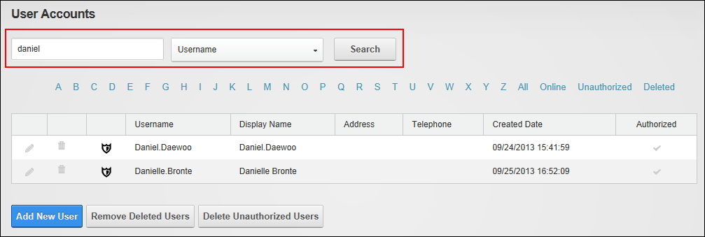

Searching for a User Account
How to search for a user account on the User Accounts module. Searches can be performed using one of several account details such as user name, address, email, name, etc.
- Navigate to Admin >
 User Accounts - OR - Go to a User Accounts module.
User Accounts - OR - Go to a User Accounts module.
- In the Search text box located at the top right of the module, enter the search criteria.
- Select one of the following options from the drop down list:
- Username: Searches for exact matches and all or part of the beginning of the username. E.g. Entering Ad, Admin, or A will return Admin.
- Email: Searches for exact matches only.
- Prefix: Searches for exact matches and all or part of the beginning of the prefix. E.g. Entering M, or Mr will return Mr and Mrs.
- First Name, Middle Name and Last Name: Searches for exact matches and all or part of the beginning of the name. E.g. Entering J will return all names beginning with J.
- Suffix: Searches for exact matches and all or part of the beginning of the suffix. E.g. Entering E or Esq will return Esq. and Esquire.
- Unit: Searches for exact matches and all or part of the beginning of the unit address.
- Street: Searches for exact matches and all or part of the beginning of the street address. The street number must be included. E.g. Entering 1 Jack, 1 Jack Street will return 1 Jack Street and 1 Jackson Street. Entering Jack Street will not all addresses with Jack street.
- City: Searches for exact matches and all or part of the beginning of the city name. E.g. Entering Melb will return Melbourne.
- Region: Searches for exact matches and all or part of the beginning of the region name. E.g. Entering V or Vic will return Victoria.
- Country: Searches for exact matches and all or part of the beginning of the region name. E.g. Entering Aus will return Austria and Australia.
- Postal Code: Searches for exact matches and all or part of the beginning of the postal code.
- Telephone and Cell and Fax: Searches for exact matches and all or part of the beginning of the number.
- Website: Searches for exact matches only as displayed on the user's profile. E.g. If the user's website is entered as www.domain.com, searching on domain.com will not return a match.
- IM: Searches for exact matches only as displayed on the user's profile.
- Biography: Search for both exact matches and text that matches the beginning of a word.
- Preferred Time Zone: Searches for user's within this time zone.
- Preferred Locale: Searches for user's within this locale.
- Click the Search button.

Searching for a User Account